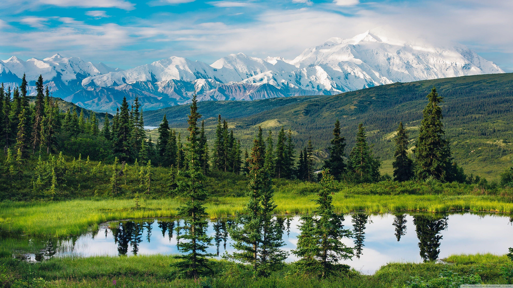

Kivoja maisemia
Montana

Montana on Yhdysvaltojen osavaltio. Se liittyi liittovaltioon 41. osavaltiona 8. marraskuuta 1889. Osavaltion nimi tulee luultavasti espanjan kielen vuorta tarkoittavasta sanasta ”montaña”.
Montanan pääkaupunki on Helena ja ainoa yli sadantuhannen asukkaan kaupunki Billings. Montana on kolmanneksi harvimpaan asuttu osavaltio Yhdysvalloissa.
Niagaran putoukset
Niagaran putoukset on kolmiosainen vesiputous Niagarajoessa Kanadan Ontarion ja Yhdysvaltain New Yorkin osavaltioiden rajalla.
Niagaran kolmesta putouksesta suurin on Kanadan-puoleinen, kaarevan muotoinen Horseshoe Falls, joka on 57 metriä korkea ja 670 metriä leveä. Yhdysvaltain-puoleinen American Falls on 58 metriä korkea ja 320 metriä leveä. Aivan American Fallsin vieressä on kapea Bridal Veil Falls, jonka erottaa American Fallsista pieni Luna Islandin saari. Bridal Veil Fallsin ja Horseshoe Fallsin välissä on Goat Islandin saari.
Colorado
Colorado on Yhdysvaltain osavaltio, jossa preeriatasankojen länsireuna kohtaa Kalliovuoret. Se on suunnilleen suorakaiteen muotoinen. Coloradon pääkaupunki ja myös väkiluvultaan suurin kaupunki on Denver. Colorado Springs ja Aspen ovat kuuluisia talviurheilukeskuksia.
Kivempia maisemia
Alaska

Alaska on Yhdysvaltain pohjoisin ja pinta-alaltaan suurin osavaltio. Alaskassa on 736 732 asukasta alueella, jonka pinta-ala on melkein 2,5 kertaa niin suuri kuin toiseksi suurimman osavaltion Texasin. Osavaltio on eksklaavi eli erillään muusta Yhdysvalloista sijaiten luoteisessa Pohjois-Amerikassa. Maaraja sillä on idässä Kanadan kanssa. Alaskan pääkaupunki on Juneau ja väkiluvultaan suurin kaupunki Anchorage. Osavaltiossa on suuret luonnonvarat, muun muassa öljyä, kultaa ja kuparia.
Osavaltion nimi tulee aleutinkielen sanasta alaxsxaq, joka tarkoittaa 'manner'.
Yellowstonen kansallispuisto

Se sijaitsee suurimmaksi osaksi Wyomingin, mutta myös osittain Idahon ja Montanan alueella. Pinta-alaltaan se on 8 983 neliökilometriä. Yellowstone on pääasiassa vuoristoseutua, ja sen alueella on esimerkiksi puistolle nimen antaneen Yellowstonejoen ja Snake Riverin lähdevedet. Yellowstone sijaitsee geologisesti aktiivisella alueella, ja se sijaitsee Yellowstonen kalderana tunnetun supertulivuoren päällä.
Alueella on lisäksi monia geysireitä ja kuumia lähteitä, muun muassa maailman ehkä kuuluisin geysir Old Faithful eli Vanha Uskollinen. Alue on tunnettu monipuolisesta luonnostaan, kuten kanjoneistaan ja vesiputouksistaan. Sen kasvillisuus on tyypillistä Kalliovuorten kasvillisuutta, ja 80 prosenttia puiston pinta-alasta on metsää. Yellowstonessa on lisäksi rikas eläimistö, johon kuuluu muun muassa karhuja, biisoneita ja puumia.
Grand Canyon
Kanjoni on noin 446 kilometriä pitkä. Sen keskimääräinen leveys on noin 16 kilometriä ja syvyys reunoilta pohjalle enimmillään runsaat puolitoista kilometriä. Kanjonin seinät ovat valtava, miljoonia vuosia kestäneiden geologisten prosessien monivärinen näyttely. Kanjonia ympäröi Grand Canyonin kansallispuisto. Kanjonia asuttivat Amerikan alkuperäiskansat jo kauan ennen kuin ensimmäinen eurooppalainen, García López de Cárdenas, ehätti sen reunalle vuonna 1540.
Nykyään kanjoni on suosittu vaelluskohde, jossa liikutaan jalan, ratsain tai vesitse Coloradojokea pitkin. Kanjonilla käy miljoonia matkailijoita vuodessa.
Uudet tekniikat
HTML Form
Headerissa sisäänkirjautumis osio.
CSS Background image
Nähtävissä Main osion otsikoissa.
CSS Transition
Ilmenee asettaessa hiiren some-alustojen kuvakkeiden päälle footer osiossa.
Bootstrap sivu
Headerin ensimmäisen linkki